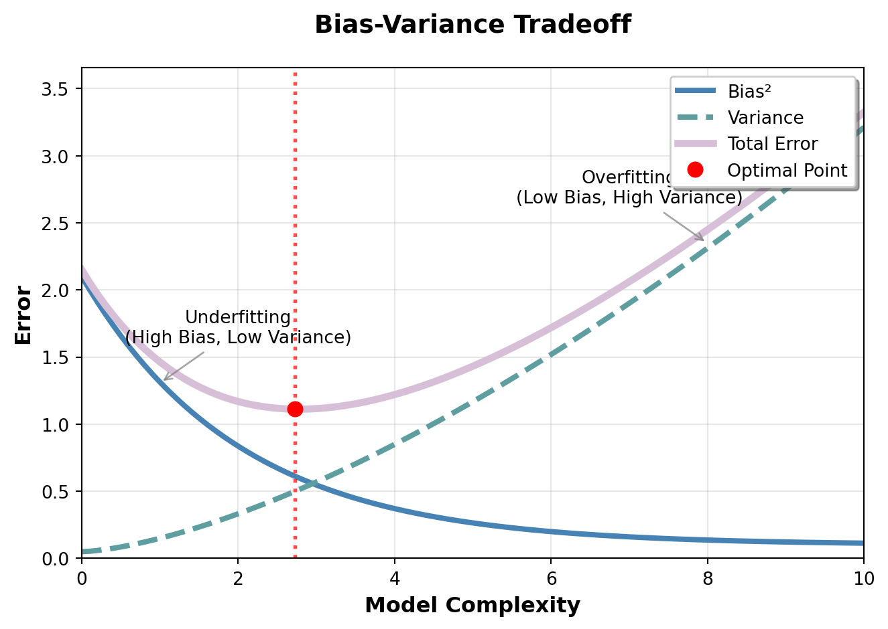
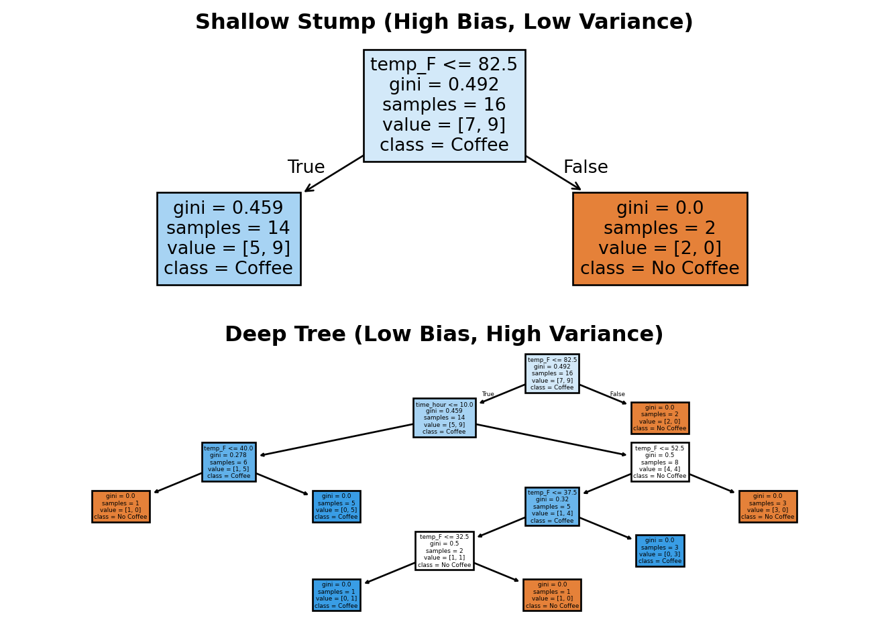
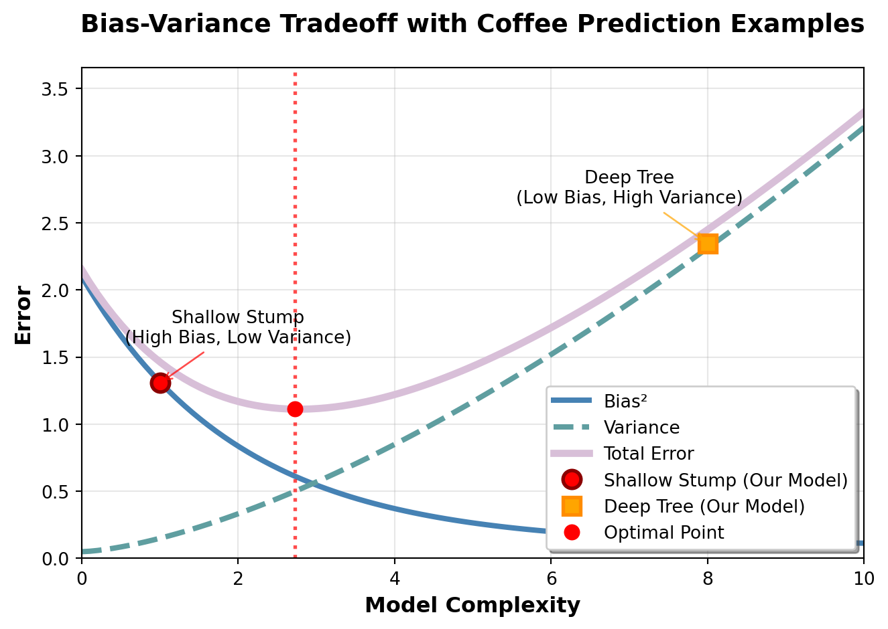
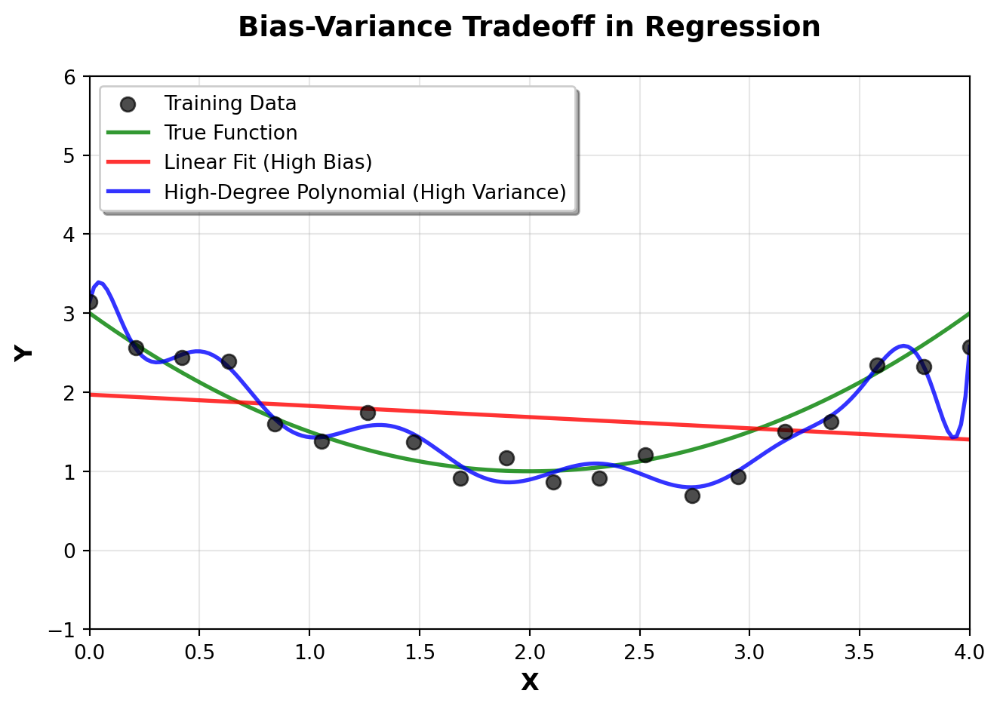
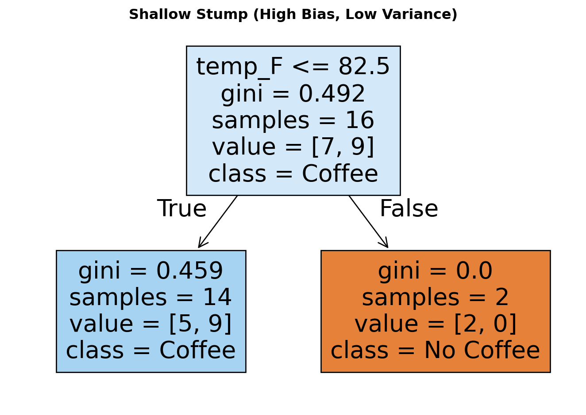
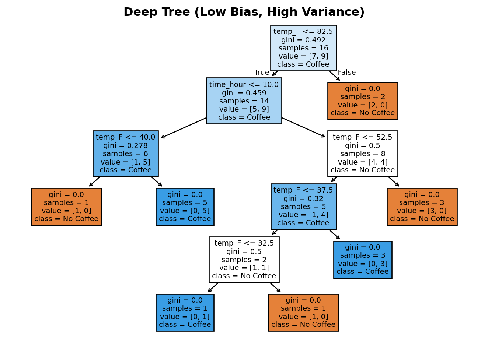

Random Forests and Other Learner Ensembles
From Single Trees to Forest Wisdom
🌲 Random Forests and Other Learner Ensembles
A Couple of Notable Criteria for A Good Prediction Model
Discuss bias and variance tradeoffs and interpretability/prediction performance tradeoffs.
Choosing the Right Bias-Variance Tradeoff
The bias-variance tradeoff is fundamental to understanding model performance. As model complexity increases, bias decreases but variance increases, creating an optimal point where total error is minimized.
What Are Bias and Variance?
Bias (from statistics) is the difference between the expected (average) prediction of your model and the true value. It measures systematic deviation - how far off your model is on average.
Variance (from statistics) is how much your model’s predictions vary when trained on different datasets. It measures instability - how much your predictions scatter around their average.
The etymology:
- Bias is purported to have entered the English language from an English game called bowls where it refers to a ball made with greater weight on one side.
- Variance comes from statistics - it measures how spread out values are from their mean
Mathematically:
- Bias² = (Average Prediction - True Value)²
- Variance = Average of (Individual Prediction - Average Prediction)²
Important clarification: The variance in bias-variance decomposition measures how much your model’s predictions vary across different training datasets - it’s independent of the true values. This is different from the inherent variability in the true values themselves.
Practical measurement: Since we rarely have truly “different” datasets, we estimate variance using techniques like bootstrap sampling, cross-validation, or bagging (like Random Forests do). Don’t worry if these terms are unfamiliar - we’ll explore them as we learn about ensemble methods.
Connection to precision and accuracy:
- Bias is essentially inaccuracy - low bias means your model is accurate (close to truth on average)
- Variance is essentially imprecision - low variance means your model is precise (consistent predictions)
Key difference: Precision/accuracy are typically measured on a single model’s predictions, while bias/variance are theoretical concepts about how a model would behave across many different training datasets.
Simple analogy:
- High bias, low variance: A broken clock (always wrong, but consistently wrong) = inaccurate but precise
- Low bias, high variance: A drunk person trying to hit a target (might be right on average, but wildly inconsistent) = accurate on average but imprecise
This graph illustrates the fundamental tradeoff in machine learning: simple models have high bias but low variance (underfitting), while complex models have low bias but high variance (overfitting). The optimal model complexity occurs where the total error is minimized, balancing both sources of error.
Examples of Bias and Variance
Coffee Purchase Prediction
Let’s explore bias and variance with a concrete example: predicting whether someone buys hot coffee based on time of day, temperature, and rain. People usually buy hot coffee in the morning, but extreme heat suppresses it. In the evening, most skip it unless it is very cold and raining.
Our dataset contains 16 examples with a clear pattern: people buy hot coffee in the morning (8am) unless it’s too hot (80°F), and in the evening (6pm) only when it’s cold. The class distribution is balanced with 8 examples of each outcome.
Now let’s fit two models to demonstrate the bias-variance tradeoff:

The shallow stump makes a simple rule but misses the nuanced pattern (high bias). The deep tree memorizes the training data perfectly but would likely fail on new data (high variance). The deep tree creates a unique path for almost every training example, achieving 100% training accuracy while the stump achieves much lower accuracy.
Quick interpretation of decision tree node output: When you see output like gini = 0.459, samples = 14, value = [5, 9], class = Coffee, here’s what it means:
- gini = 0.459: The Gini impurity at this node (0.459 indicates moderate uncertainty - not perfectly pure but not completely mixed)
- samples = 14: 14 data points reached this node during training
- value = [5, 9]: 5 examples of “No Coffee” and 9 examples of “Coffee” in this node
- class = Coffee: The majority class prediction (since 9 > 5, it predicts “Coffee”)
How to compute Gini impurity: The Gini impurity measures how “mixed” a node is. For a node with class distribution \([5, 9]\):
\[Gini = 1 - \sum_{i=1}^{c} p_i^2\]
Where \(p_i\) is the proportion of samples belonging to class \(i\). For our example:
- \(p_1 = \frac{5}{14} = 0.357\) (proportion of “No Coffee”)
- \(p_2 = \frac{9}{14} = 0.643\) (proportion of “Coffee”)
\[Gini = 1 - (p_1^2 + p_2^2) = 1 - (0.357^2 + 0.643^2) = 1 - (0.127 + 0.414) = 1 - 0.541 = 0.459\]
This confirms the Gini impurity of 0.459 shown in the node output!
Why Gini over misclassification rate? You might wonder: “Why not just use the percentage of misclassified samples?” For our example, that would be \(\frac{5}{14} = 0.357\) (35.7% misclassified). Here’s why Gini is better:
1. Sensitivity to class distribution changes: - Misclassification rate: Only cares about the minority class size - Gini impurity: Responds to changes in both class proportions
2. Better split selection: Consider two potential splits: - Split A: Creates nodes with distributions [8,2] and [2,8] - Split B: Creates nodes with distributions [10,0] and [0,10]
Both have the same misclassification rate (20%), but Split B is clearly better because it creates pure nodes. Gini correctly identifies this: - Split A Gini: \(1 - (0.8^2 + 0.2^2) = 0.32\) for both nodes - Split B Gini: \(1 - (1^2 + 0^2) = 0\) for both nodes (perfect!)
3. Mathematical properties: - Gini is strictly convex, meaning it penalizes mixed nodes more heavily - It’s differentiable, making it easier to optimize - It has a maximum value of 0.5 for binary classification (when classes are perfectly balanced)
The key insight: Gini impurity encourages the tree to create nodes that are as “pure” as possible, not just nodes with low error rates. This leads to better generalization and more interpretable trees.

This example shows how the shallow stump (high bias) makes simple but inaccurate rules, while the deep tree (high variance) memorizes the training data but would likely perform poorly on new coffee-buying scenarios. The optimal model would balance both sources of error.
A Classic Regression Example
Let’s also look at a more traditional example: fitting a curve to noisy data. We’ll generate data from a smooth underlying pattern and show how different model complexities lead to bias-variance tradeoffs.

The linear model (red line) has high bias - it’s too simple to capture the curved pattern, so it systematically underfits the data. The high-degree polynomial (blue line) has high variance - it wiggles to hit every training point exactly, but would perform poorly on new data. The optimal model would be somewhere in between, perhaps some simple smooth function for a curve that captures the underlying pattern without memorizing the noise (beyond our scope).
Why “Underfitting” and “Overfitting” Are Much Better Terms Than “Bias” and “Variance”
While bias and variance are mathematically precise, they’re also pretty abstract and confusing for most people. The terms “underfitting” and “overfitting” are much more intuitive and practical.
Underfitting (high bias, low variance) means your model is too simple - it’s missing important patterns in the data. Think of it like trying to fit a straight line through a curved relationship. The model is consistently wrong because it’s not complex enough to capture what’s really happening.
Overfitting (low bias, high variance) means your model is too complex - it’s memorizing the training data instead of learning the underlying generalities or pattern. Think of it like a student who memorizes every word of a textbook but can’t answer questions about the concepts.
The beauty of these terms is that they immediately suggest solutions:
- Underfitting? Make your model more complex (add features, increase depth, use a more flexible algorithm)
- Overfitting? Make your model simpler (reduce features, decrease depth, add regularization)
Bias and variance, on the other hand, require you to remember which direction to go and why. “Underfitting” and “overfitting” tell you exactly what’s wrong and what to do about it. Plus, they work across all types of models - not just the statistical ones where bias and variance were originally defined.
So while we’ll still use bias and variance when we need mathematical precision, underfitting and overfitting are the terms that actually help you build better models in practice.
Choosing the Right Interpretability/Prediction Performance Tradeoff
Just like with underfitting and overfitting, there’s another fundamental tradeoff in machine learning: interpretability vs. prediction performance. And just like underfitting/overfitting, this tradeoff has a much more practical framing than the abstract terms suggest.
Interpretability means you can understand and explain how your model makes decisions. You can point to specific rules, features, or patterns that drive the predictions.
Prediction Performance means your model is accurate on new, unseen data - it generalizes well beyond the training set.
Here’s the key insight: interpretable models tend to underfit, while high-performance models tend to overfit. This creates a natural tension between wanting to understand your model and wanting it to be accurate.
The Interpretability-Performance Spectrum
Highly Interpretable Models (Tend to Underfit):
- Linear regression: “For every $1 increase in price, sales drop by 2.3 units”
- Simple decision trees: “If temperature > 75°F and time = morning, then buy coffee”
- Rule-based systems: Clear, logical if-then statements
These models are easy to explain to stakeholders, debug when they fail, and trust in high-stakes decisions. But they often miss complex patterns in the data.
High-Performance Models (Tend to Overfit): - Deep neural networks: Thousands of interconnected parameters - Complex ensembles: Hundreds of trees with intricate interactions - Support vector machines: High-dimensional feature transformations
These models can capture subtle patterns and achieve impressive accuracy, but they’re often “black boxes” that are hard to explain or debug.
The Sweet Spot: Balanced Models
The best models for most business applications find a middle ground:
- Moderately complex decision trees (depth 3-5): Interpretable enough to explain key decisions, complex enough to capture important patterns
- Random forests with limited depth: Each tree is interpretable, but the ensemble captures more complexity
- Linear models with engineered features: Simple structure but sophisticated input preparation
The Causal Interpretation Challenge
Here’s where things get really interesting: being able to explain what your model does is not the same as understanding why it works. This is the difference between predictive interpretability and causal interpretability.
Predictive Interpretability (what most people mean by “interpretable”):
- “The model predicts anxiety because stress > 6 and sleep < 5 hours”
- “Sales increase by $2.30 for every $1 increase in marketing spend”
- You can trace the model’s logic and explain its decisions
Causal Interpretability (the deeper question):
- “Does high stress actually cause anxiety, or are they just correlated?”
- “If we increase marketing spend by $1, will sales actually increase by $2.30, or is this just a spurious correlation?”
- You understand not just what the model predicts, but what would actually happen if you intervened
Why This Matters for Business
Consider these scenarios:
Scenario 1: Spurious Correlation Your model finds that people who buy expensive cars are more likely to default on loans. This is interpretable and accurate for prediction. But if you use this to deny loans to people who buy expensive cars, you might be discriminating based on wealth rather than actual creditworthiness.
Scenario 2: Reverse Causality Your model shows that people with high credit scores are more likely to have multiple credit cards. This is true, but it’s not because having multiple cards improves your score - it’s because having a good score makes you eligible for more cards.
Scenario 3: Confounding Variables Your model predicts that employees who work in the office have 18% higher productivity scores. This is interpretable and the correlation is strong. But if you mandate everyone return to the office to boost productivity, you might discover that the real driver is that your most productive employees were already choosing to come to the office because they’re more engaged and collaborative by nature. The office work didn’t cause higher productivity - it was just a symptom of already being a high performer who thrives in collaborative environments.
The Model Complexity Connection
Here’s the tricky part: more complex models often capture causal relationships better, but are harder to interpret causally.
- Simple models (linear regression, shallow trees) are easy to interpret but often miss causal relationships because they can’t capture complex interactions
- Complex models (deep trees, neural networks) can capture subtle causal patterns but are so complex that it’s hard to extract the causal logic
This creates a three-way tension: simplicity vs. accuracy vs. causal understanding.
Practical Approaches
For Causal Understanding:
- Start simple: Use interpretable models to identify potential causal relationships
- Test interventions: When possible, run controlled experiments to verify causality
- Domain expertise: Combine model insights with subject matter knowledge
- Causal inference methods: Use techniques like instrumental variables, regression discontinuity, or randomized controlled trials when possible
The Reality Check: Most business decisions require some level of causal understanding, not just predictive accuracy. You need to know not just what will happen, but what will happen because of your actions.
This is why the interpretability vs. performance tradeoff is so important - you often need enough interpretability to make causal judgments, even if it means sacrificing some predictive performance.
When to Prioritize What
Choose Interpretability When:
- Regulatory requirements demand explanations
- You need to debug model failures
- Stakeholders need to understand and trust the model
- You’re exploring data to generate hypotheses
- The cost of being wrong is high and you need to verify logic
Choose Performance When:
- Accuracy is the primary concern
- You have large amounts of data
- The problem is well-defined and stable
- You can afford to treat the model as a “black box”
- Small improvements in accuracy translate to significant business value
The Practical Reality: Most real-world projects need both. You might start with an interpretable model to understand the problem, then build a high-performance model for production, keeping the interpretable one for validation and explanation.
This is why ensemble methods like random forests (to be discussed next) are so powerful - they give you a way to have your cake and eat it too, combining the interpretability of individual trees with the performance of ensemble wisdom.
The Options In Light of These Criteria
Now that we understand the fundamental tradeoffs between bias/variance and interpretability/performance, let’s explore the four main approaches to building prediction models. Each represents a different strategy for navigating these tradeoffs.
A single weak learner
The “Simple and Stubborn” Approach
A single weak learner is like that friend who always gives the same advice regardless of the situation. They’re consistent (low variance) but often miss the nuances (high bias). Think of a shallow decision tree that always asks “Is it morning?” to predict coffee purchases, regardless of temperature, rain, or other factors.
Pros:
- Highly interpretable: “If it’s morning, buy coffee” - crystal clear logic
- Fast and efficient: No complex computations needed
- Stable: Same prediction every time for the same input
- Low risk of overfitting: Too simple to memorize training data
Cons:
- Often underfits: Misses important patterns in the data
- Limited accuracy: Can’t capture complex relationships
- Rigid: Can’t adapt to different types of problems
When to use: When you need a quick, explainable baseline model or when your data is very simple and linear.
A strong learner
The “Genius but Unpredictable” Approach
A single strong learner is like that brilliant but erratic friend who sometimes gives amazing insights and sometimes completely misses the mark. They’re smart (low bias) but inconsistent (high variance). Think of a deep decision tree that memorizes every training example, creating a unique rule for each coffee purchase scenario.
Pros:
- High accuracy on training data: Can capture complex patterns
- Flexible: Can handle non-linear relationships and interactions
- Powerful: Can solve difficult problems that simple models can’t
Cons:
- Prone to overfitting: Memorizes training data instead of learning general patterns
- Unstable: Small changes in data can dramatically change predictions
- Hard to interpret: Complex logic that’s difficult to explain
- Poor generalization: Often performs badly on new, unseen data
When to use: When you have lots of data, accuracy is paramount, and interpretability isn’t critical.
An ensemble of weak learners
The “Wisdom of Crowds” Approach
This is where the magic happens! An ensemble of weak learners is like asking a group of moderately knowledgeable people for advice and averaging their responses. Each individual might be wrong, but collectively they’re often right. This is the core idea behind Random Forests.
The Key Insight: By combining multiple simple models, you can reduce both bias AND variance simultaneously - something impossible with a single model.
How it works:
- Bootstrap sampling: Each weak learner sees a different random sample of your data
- Feature randomness: Each learner focuses on different features or combinations
- Averaging predictions: The final prediction is the average (or majority vote) of all learners
Pros:
- Best of both worlds: Lower bias than individual weak learners, lower variance than strong learners
- Robust: Less sensitive to outliers and noise in the data
- Still interpretable: Each individual tree is simple and explainable
- Handles overfitting: The ensemble effect reduces the risk of memorizing training data
Cons:
- More complex: Requires more computational resources
- Less interpretable than single weak learners: Harder to explain the ensemble logic
- Still limited: Can’t capture patterns that require very complex interactions
When to use: This is often the sweet spot for most business applications - good accuracy with reasonable interpretability.
An ensemble of strong learners
The “Committee of Experts” Approach
This is like having a panel of brilliant but opinionated experts, each with their own specialty. Each expert is highly capable (low bias) but might be inconsistent (high variance). When you combine them thoughtfully, you get the best of both worlds.
Examples:
- Stacking: Train different types of models (trees, neural networks, linear models) and use another model to combine their predictions
- Boosting: Train models sequentially, where each new model focuses on the mistakes of previous models
- Advanced Random Forests: Deep trees with sophisticated feature engineering
Pros:
- Highest accuracy: Can achieve state-of-the-art performance on complex problems
- Handles complex patterns: Can capture subtle interactions and non-linear relationships
- Robust to different data types: Can combine different modeling approaches
Cons:
- Computationally expensive: Requires significant resources to train and deploy
- Complex to tune: Many hyperparameters to optimize
- Hard to interpret: The ensemble logic is often a black box
- Risk of overfitting: Can still memorize training data if not carefully managed
When to use: When you need maximum accuracy and have the computational resources and expertise to manage complexity.
The Ensemble Advantage: Why Random Forests Are Like a Smart Committee
Imagine you’re trying to predict whether someone will buy hot coffee tomorrow. You could ask one person who knows a little about coffee habits, or you could ask 100 people who each know a little about coffee habits and average their answers. Which approach do you think would be more accurate?
Spoiler alert: The committee of 100 usually wins, and that’s exactly how Random Forests work!
The “Wisdom of Crowds” in Machine Learning
Random Forests are built on a simple but powerful idea: multiple mediocre predictions are often better than one brilliant prediction. It’s like the difference between asking one expert vs. asking a room full of moderately knowledgeable people.
Here’s the magic: each individual tree in a Random Forest is actually pretty simple (and might make mistakes), but when you combine hundreds of them, their collective wisdom often outperforms even the most sophisticated single model.
Why This Works: The Math Behind the Magic
Think of it this way:
- Individual trees are like individual voters - each might be wrong, but they’re wrong in different ways
- The forest is like the election result - the majority tends to be right even when individuals are wrong
- Random sampling ensures each tree sees slightly different data, so they don’t all make the same mistakes
- Feature randomness means each tree focuses on different aspects of the problem
The result? You get the accuracy of a complex model with the stability and interpretability of simple models. It’s like having your cake and eating it too!
A Quick 10 Minute Primer to Random Forests
Want to see Random Forests in action? Check out this excellent StatQuest video that walks through building, using, and evaluating Random Forests step-by-step. It’s based on Leo Breiman’s original work (one of the creators of Random Forests) and does a fantastic job of explaining the bootstrap sampling and out-of-bag evaluation concepts.

Note: The video assumes you’re familiar with decision trees - if you need a refresher, they also have a great video on that topic!
Appendix: Extra Visuals for Usage in Poll Everywhere
Shallow Stump (High Bias, Low Variance)

Deep Tree (Low Bias, High Variance)
